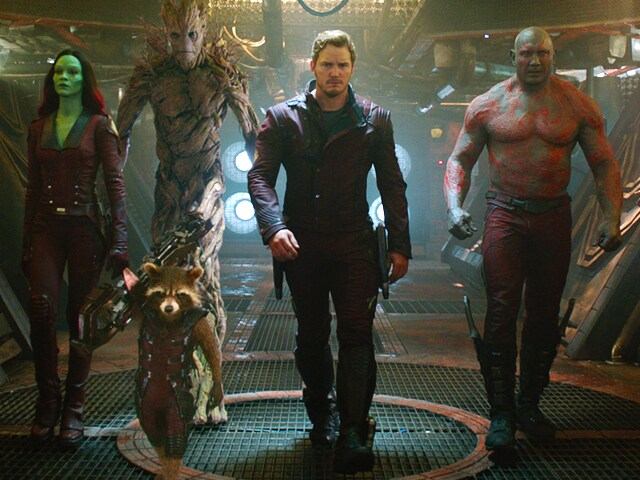

Both of these websites are Marvel resources that provide a directory of characters from the comic universe. They discuss the origins, story arcs, and powers of each character. Every character has a unique story that dives into their appearances and connections with other characters. These sites also offer images, videos, and comics related to the characters, making them captivating resources for exploring Marvel's heroes and villains.

| Guardians of Galaxay | Avengers |
|---|---|
| Star-Lord | Captain America |
| Groot | Black Widow |
| Gamora | Hawkeye |
Watching Marvel movies is one of my favorite ways to unwind. In the images above, Star-Lord and Captain America stand out as my top two characters; they're both almost centered in the frame. The picture on the left shows the Guardians of the Galaxy, while the one on the right captures the Avengers. Marvel has really grown since it first started, and it's exciting to see how much it has shaped the future of Marvel films.